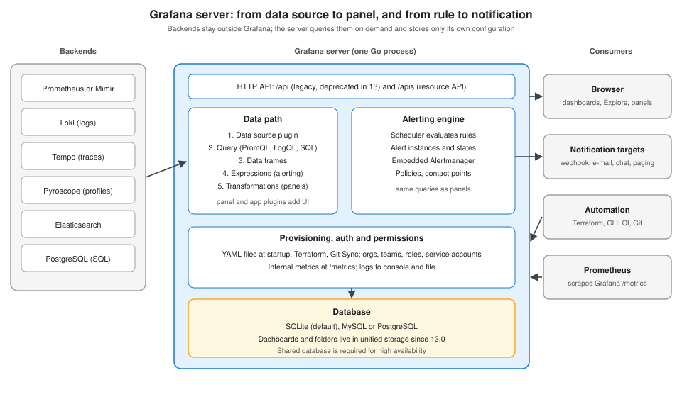

Grafana Architecture & Ecosystem
|
This content was generated with the assistance of AI and should be verified against the official documentation before being relied on in production. |
Checked on 2026-11-09 against Grafana 13.3.x.
To do this by hand, follow First Steps in Grafana.
Knowing how Grafana is put together explains most of the behaviour that surprises newcomers: why a dashboard can mix a PromQL panel and a SQL panel, why an alert rule needs the same query as a panel but runs on the server, why moving to a second Grafana instance means moving a database, and why upgrades from 12.x to 13.x touch storage. This page describes the parts, the path a query takes through them, and the products Grafana Labs ships around the server. Installing and configuring the server is on Installation and Configuration.

The Grafana server
Grafana is a single server process (a Go back end that serves a web front end). Everything in the figure above runs inside it:
-
The HTTP server and APIs. It serves the UI and two API surfaces.
/apiis the long-standing REST API, which Grafana 13 deprecates in favour of/apis, a Kubernetes-style resource API with a standard structure and consistent versioning. Legacy APIs are not being switched off yet, no longer receive updates, and will be removed in a future major release. -
The plugin host. Data source, panel and app plugins are loaded by the server (see below).
-
The alerting engine. A scheduler evaluates alert rules, keeps the state of every alert instance and hands firing alerts to an embedded Alertmanager. The data path is shared with dashboards: the same data source plugins run the queries. See Alerting Architecture.
-
Provisioning, authentication and authorization. Files read at startup, API and Terraform changes, Git Sync, and the model of organizations, teams, roles and service accounts (Users, Teams and Permissions).
-
The database. Grafana’s own state: dashboards, folders, users, teams, data source definitions, alert rules, alert state, preferences. It is SQLite by default; MySQL and PostgreSQL are supported, and high availability requires one of the two. The installation page states minimum versions of MySQL 8.0+ and PostgreSQL 12+.
-
Internal telemetry. The server exposes its own metrics at
/metrics, writes logs, and can emit traces, so it can be monitored like any service (Monitoring Grafana itself).
Source: Install Grafana (supported databases), New API structure in Grafana.
The /apis structure
The new resource API has a URL shape worth knowing, because Terraform, Git Sync and the Foundation SDK all talk to it:
/apis/<GROUP>/<VERSION>/namespaces/<NAMESPACE>/<RESOURCE>[/<NAME>]For example, GET /apis/dashboard.grafana.app/v1/namespaces/default/dashboards/production-overview returns one dashboard. The
group (dashboard.grafana.app) organises related APIs; the version is v1alpha1 (experimental, off by default), v1beta1
(off by default) or v1 (GA, on by default); the resource is the plural name such as dashboards, folders or playlists.
The namespace is default for organization 1 and org-<ORG_ID> for the others on a self-managed instance, and
stacks-<STACK_ID> on Grafana Cloud. The URL uses metadata.name, not metadata.uid, and responses have the fields kind,
apiVersion, metadata and spec.
Source: New API structure in Grafana and HTTP API reference.
Unified storage
Since Grafana 13.0, folders and dashboards are stored in unified storage, the storage layer behind the resource API. On
the first start of a 13.x server, Grafana migrates them once from the legacy SQL tables, and records the migration in the
unifiedstorage_migration_log table. The old tables (dashboard, dashboard_acl, dashboard_provisioning,
dashboard_version, dashboard_tag, library_element_connection, folder) are deprecated and will be removed in a later
release. Three consequences matter in operations:
-
Back up the database before upgrading. Rolling back means restoring the backup. A downgraded server reads the stale legacy tables and does not see changes made after the migration.
-
SQLite can report "database is locked" during the migration. Grafana retries through a temporary Parquet buffer; the settings
migration_cache_size_kb(default 1000000) andmigration_parquet_buffer(defaultfalse) in[unified_storage]tune that. -
Do not run 13.0.0. That release had a migration bug that could lose or revert dashboards and folders when upgrading from 12.x with Git Sync enabled; it was withdrawn and the fix is in 13.0.1. Upgrading from 13.0.0 to 13.0.1 does not recover lost data, so restore a backup first.
Source: Upgrade to Grafana 13.0 (unified storage migration) and What’s new in 13.0.
Plugins: data source, panel and app
Grafana supports three kinds of plugin, all managed from Administration > Plugins and data > Plugins:
| Kind | Role |
|---|---|
Data source |
Connects to a system (database, API, monitoring back end), runs queries against it and converts the result to data frames. The most common ones are bundled; the docs count 155 data sources overall. |
Panel |
Adds a visualization type (Time series, Stat, Table and so on); more types can be added with panel plugins. |
App |
Bundles data sources, panels, dashboards and pages into one experience, with its own navigation. The Drilldown apps and the Prometheus Alerting app plugin (13.3, public preview) are examples. |
Grafana verifies at load time whether each plugin is signed, to detect tampering. Server Administrators can install,
update and uninstall app plugins but not configure them; Organization Admins configure them but cannot install or update.
Angular-based plugins can no longer run since Grafana 12.0. Plugins can also be installed at start with
GF_PLUGINS_PREINSTALL, covered on the installation page.
Source: Plugin management and What’s new in 12.0.
From data source to panel
The documented data flow is: data source, plugin, query, optional transformation, panel. Two ideas make it general:
-
A data source is a connection to a storage back end, not a copy of the data. It holds connection details and credentials; the query is written in that back end’s language (PromQL, LogQL, TraceQL, SQL, Lucene or ES|QL).
-
Everything becomes a data frame. The data source plugin converts the response into data frames, Grafana’s unified tabular structure, so a panel does not care whether the numbers came from Prometheus or PostgreSQL. This is also why a single dashboard can show several data sources, and why transformations can join results from different queries.
Transformations reshape the frames in the browser each time the dashboard refreshes: combine fields, convert types, filter and join. Server-side expressions run in the Grafana server instead, which is what makes them usable by alert rules that have no browser. Both are covered on Transformations and Expressions, and the data sources themselves on Data Sources.
By default any user in an organization can query any data source defined there; Enterprise and Cloud can restrict query, edit and admin access by user, team or role. Data sources are added in the UI under Connections > Data sources by organization admins, or defined as code with YAML provisioning or Terraform.
Source: Dashboards overview and Data sources.
What can go wrong
-
Treating Grafana as storage. Telemetry retention is decided by Prometheus, Mimir, Loki and Tempo (Storage, Retention and Cost), not by Grafana. A dashboard cannot show data the back end has already deleted.
-
Single point of failure in the database. Dashboards, alert rules and users all live in the Grafana database. Back it up, and do not run SQLite for production or for multiple servers.
-
Query load. Each panel on each open dashboard queries the back end on every refresh; alert rules query on every evaluation. Slow or expensive queries hurt the back end first, not Grafana.
-
Numeric IDs and old API paths in scripts. Data source APIs that use numeric
idare disabled by default in 13.0 (useuid), and/apiis deprecated. Automation written for older versions needs a pass.
The ecosystem around the server
Grafana Labs ships one product per signal and per job. In short:
| Product | What it does | Documentation |
|---|---|---|
Loki |
Logging stack: a log store indexed by labels, queried with LogQL. |
|
Grafana |
Query, visualize and alert; this subsection. |
|
Tempo |
High-volume distributed tracing back end, queried with TraceQL. |
|
Mimir |
Scalable long-term storage for Prometheus metrics. |
|
Pyroscope |
Continuous profiling: aggregates CPU and memory use down to the line number. |
|
Alloy |
A vendor-neutral distribution of the OpenTelemetry Collector, compatible with OpenTelemetry and Prometheus; the replacement for Grafana Agent and Promtail. |
|
k6 |
Open source load testing, used in the lab to give dashboards and alerts live data. |
|
Beyla |
eBPF-based auto-instrumentation that captures traces and RED metrics for Linux HTTP/S and gRPC services without code changes. |
|
Faro |
JavaScript agent for real user monitoring of web applications. |
Loki, Grafana, Tempo and Mimir together are the "LGTM" stack; Alloy collects and routes the telemetry into it. In the lab, Alloy
scrapes Bookshelf’s /actuator/prometheus, receives OTLP traces and reads logs, and writes to Prometheus (or Mimir), Tempo
and Loki. The collection side is explained on
Telemetry Collection Pipelines and the signals on
Observability Fundamentals. Prometheus itself and Alertmanager are
documented under Prometheus architecture. Incident response products
(OnCall and Incident, now part of Grafana IRM on Cloud) are covered on SLOs and IRM.
Source: Grafana introduction (stack products) and Migrate to Alloy.
Verify it in the lab
With the lab running (or any Grafana 13.3 container), check each layer:
-
curl -s http://localhost:3000/api/healthreturns JSON withdatabase,versionandcommit;databasemust beok. -
In the UI open Administration > Plugins and data > Plugins and filter by "Data source" to see the installed plugin kinds.
-
curl -s -u admin:admin http://localhost:3000/apis/dashboard.grafana.app/v1/namespaces/default/dashboardslists dashboards through the resource API (adjust credentials; the namespace isdefaultfor organization 1). -
Open Explore, choose Prometheus, run
upand switch to the Table view: each row is one series of a data frame.
Source: Health API.
In the books
Chapman and Holmes (Observability with Grafana, early chapters, Grafana 10.2) give the best tour of the stack and the personas who use it; it predates Alloy replacing Grafana Agent (end of life 2025-11-01), the fold of OnCall and Incident into IRM, Beyla and Faro as everyday tools, and unified storage. McCollam (Getting Started with Grafana, chapter 3 "Deploying Grafana Locally") and Salituro (Learn Grafana 10.x, chapter 1) describe the same server on Grafana 8.2 and 10; their descriptions of the database and plugins still hold, while Angular plugins, API keys and numeric data source IDs do not. Publisher pages are in the bibliography.